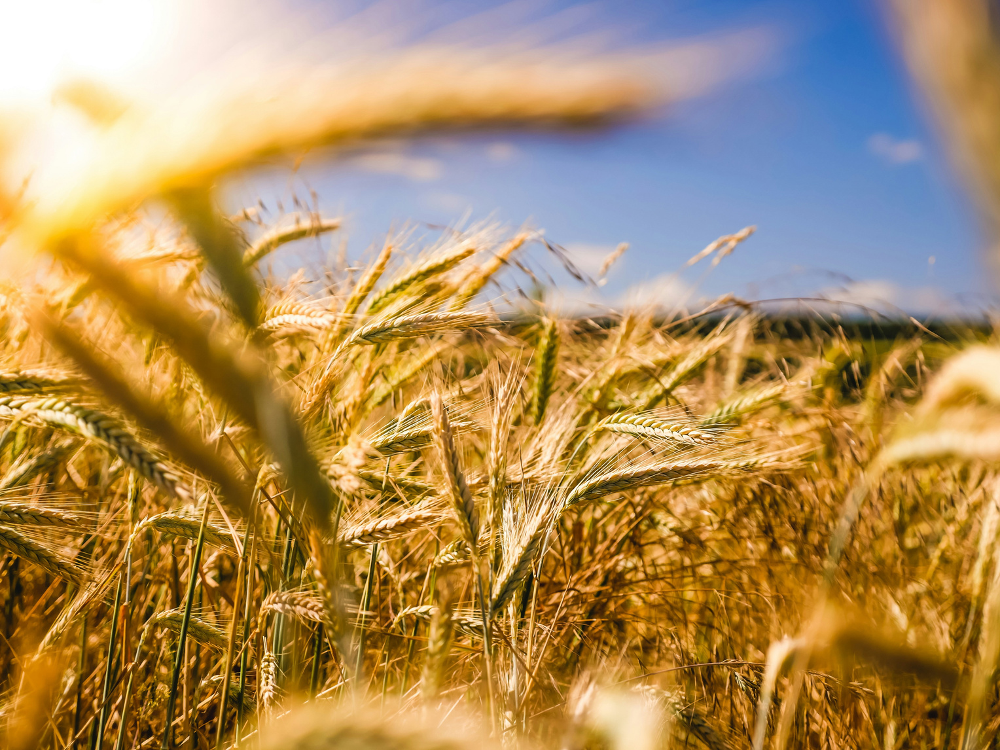

About the alliance
Why ABA exists
ABA brings African manufacturers, formulators, distributors and specialists together to improve the conditions for biological agriculture.
See how membership works ↗
The problem
Biological products are entering markets through regulatory systems that were not designed for them.
Requirements vary, market access is uneven, and African manufacturers and formulators often have limited influence in the policy, regulatory and market forums that shape the sector.
Without an organised sector voice, recurring problems remain individual problems. Useful registration experience is scattered, local capability is less visible, and buyers and institutions have no shared source of clear, reviewed sector information.
ABA's response
The sector must act together.
ABA gives biologicals organisations a way to identify shared barriers, agree priorities and take evidence into regulatory, policy and market discussions.
It also connects technical knowledge, supports clearer information about biological products and gives members a direct role in the work the alliance takes forward.

-
01
Advocacy and representation
Agree the issues that matter to members and take a credible sector position into policy, regulatory and market discussions.
-
02
Enabling environment and harmonisation
Use registration experience and shared evidence to argue for clearer, more suitable processes and greater consistency across African markets.
-
03
Local manufacturing and circularity
Make locally rooted production, formulation, research, skills and jobs more visible in the case for biological agriculture.
-
04
Membership, chapters and governance
Build a member alliance in South Africa first, with participation rules and local leadership shaping any future work elsewhere in Africa.
-
05
Product clarity and sector credibility
Develop clearer, reviewed information about biological products and the evidence behind them, without implying endorsement or automatic listing.
What the work is meant to change
A credible sector voice
Agreed priorities and reviewed evidence give ABA a stronger basis for collective representation.
Clearer pathways
Registration experience can show where requirements are unclear, inconsistent or poorly suited to biological products.
Stronger African participation
Local organisations, technical specialists and researchers can shape the sector's development from within Africa.
The principle
A new, organised agricultural sector and system in Africa. For Africa.
Where ABA works
Based in South Africa
ABA's founding members and current regulatory work are based in South Africa. Manufacturers, distributors, researchers and specialists elsewhere in Africa can express interest and contribute.
Work in another country must be shaped with local participants and respond to that country's needs. ABA will not imply a chapter or active presence before one exists.
Learn about membership ↗